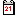

Sistema solar
Contingut de la guia ràpida
- Sistema solar
Planetes
Podeu fer que es mostrin o no, el Sol, els planetes i els satèl·lits, amb el menú Carta → Mostra els objectes → Mostra els planetes o amb la icona de la barra d'objectes.
{kind=link}
Avançat ⇒ En el menú Configuració → Sistema solar → Planeta , podeu triar les opcions de presentació per als objectes del sistema solar, fixar la longitud de la GTR (Gran Taca Roja), activar la visió de l'ombra de la Terra (per als eclipsis lunars) i permetre el mode transparent per als planetes (útil per a les ocultacions).
Cometes
La instal·lació estàndard de Cartes del Cel conté un fitxer de mostra amb poc més de 200 cometes (en el meu cas és a C:\Arxius de programa\Ciel\data\sample\Cometsample.dat). Els heu de carregar en la base de dades amb el menú Configuració → Sistema solar → Cometa - Carrega arxiu .
Podeu fer que els cometes es mostrin o no, amb el menú Carta → Mostra els objectes → Mostra els cometes o amb la icona de la barra d'objectes.
{kind=link}
Avançat ⇒ En el menú Configuració → Sistema solar → Cometa - Descarrega , podeu baixar des del lloc MPC (Minor Planet Center) el fitxer complet actual. En el mateix menú, “Manteniment dades” possibilita treure les bases de dades obsoletes i deixar les que us interessin. I finalment, “Afegeix” us deixa entrar manualment les dades orbitals d'un nou cometa.
Asteroides
La instal·lació estàndard de Cartes del Cel conté un fitxer de mostra amb uns 5000 asteroides (jo ho tinc a C:\Arxius de programa\Ciel\data\sample\MPCSAMPLE.DAT). Ho heu de carregar a la base de dades amb el menú Configuració → Sistema solar → Asteroide -Carrega arxiu .
Llavors heu de preparar les dades del mes amb el mateix menú i la mateixa pestanya.
Podeu fer que els asteroides es mostrin o no, amb el menú Carta → Mostra els objectes → Mostra els asteroides o amb la icona  de la barra d'objectes.
de la barra d'objectes.
Avançat ⇒ En el menú Configuració → Sistema solar → Asteroide - Descarrega , podeu baixar des del lloc MPC el fitxer complet actual. En el mateix menú, “Manteniment dades” possibilita treure les bases de dades obsoletes i deixar les que us interessin. I finalment, “Afegeix” us deixa entrar manualment les dades orbitals d'un nou asteroide.
Simulació d'òrbites
Podeu simular el desplaçament orbital dels objectes del sistema solar amb Configuració → Data/Hora → Simulació del temps.
Simulació dels crepuscles
Podeu aplicar una simulació dels colors del cel durant els crepuscles amb el menú Configuració → Color → Color del cel (botó “Fixat negre” o “Automàtic”) o amb la icona  de la barra d'objectes.
de la barra d'objectes.
Avançat ⇒ Dins del mateix menú podeu variar tant els colors del crepuscle com el del cel fix, al vostre gust, fent clic sobre cada color.
Efemèrides
Obtindreu les efemèrides dels objectes del sistema solar amb el menú Arxiu → Calendari o amb la icona  de la barra principal. Això afecta als crepuscles, planetes (Sol i Lluna inclosos), cometes, asteroides i els eclipsis solars i lunars.
{kind=link}
Avançat ⇒ En el mateix menú, podeu descarregar noves prediccions d'eclipsis solars i lunars per Fred Espenak des de Web de la NASA sobre eclipsis.
Podeu modificar el color dels cometes, els asteroides i les òrbites en Configuració → Presentació → Colors i els colors del cel del fons i els crepuscles a Configuració → Presentació → Color del cel.